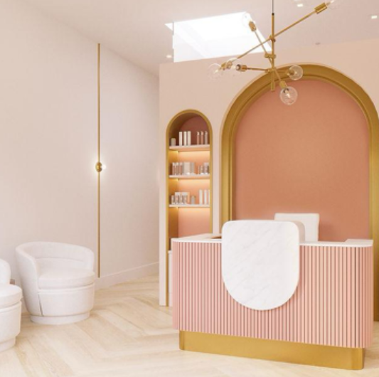

Mockup stand-in: reference 01 (final uses licensed Pexels photo)
9:41
Hi! Do you have any openings on Friday?
Seen by Blush & Bloom
Message...
1
No reply yet · 2h
Opening a med spa?
Set this up before your first DM
Here's one thing I'd set up
before your first customer messages you.